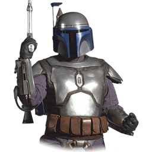

O Jogo da Memória, é um jogo de cartas em que todas as cartas são colocadas viradas para baixo sobre uma superfície e duas cartas são viradas para cima em cada turno. O objetivo do jogo é virar pares de cartas. Este jogo pode ser jogado com qualquer número de jogadores ou como solitário.
| 1 Jogador |
|  |